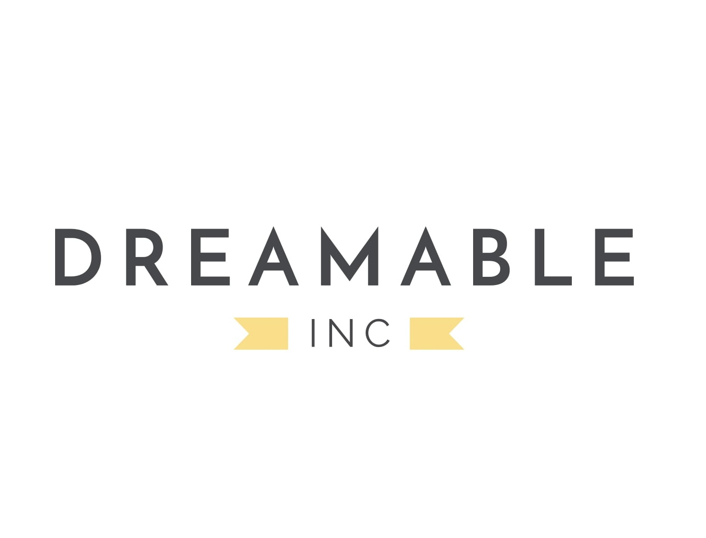

At Dreamable, I worked on building AI-driven automation workflows that streamlined data collection, analysis, and outreach. My focus was on leveraging tools like Flowise AI and n8n to design scalable pipelines that combined large language models, structured data processing, and API integrations.
Served as a Teaching Assistant for Data Structures & Algorithms, supporting students in mastering core computer science concepts such as recursion, sorting, trees, and graph algorithms. Responsibilities included leading office hours, reviewing assignments, and mentoring students on problem-solving approaches and complexity analysis. This role strengthened my technical foundations while enhancing my communication and leadership skills through teaching and one-on-one guidance.
Tutored students in foundational and advanced computer science courses, including Computer Architecture, Software Development, and Data Structures & Algorithms. Provided one-on-one and group support to strengthen understanding of core concepts, guide problem-solving strategies, and improve coding proficiency. This role reinforced my own technical knowledge while building strong communication and mentoring skills.
During my internship at Publicis Sapient, I contributed to the development of an AI-powered chatbot for a major automobile brand. My work combined cloud infrastructure engineering and AI safety design, ensuring the chatbot was both scalable and trustworthy.
At Kodely, I lead design-based workshops for students. My role combined teaching, mentorship, and curriculum delivery.